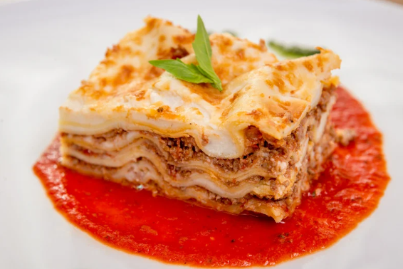

Recipe - Classic Lasagna
Classic Lasagna (Serves 6-8)
Ingredients:
- 12 lasagna noodles
- 1 lb ground beef
- 1 lb Italian sausage
- 1 jar (24 oz) marinara sauce
- 1 cup ricotta cheese
- 2 cups shredded mozzarella cheese
- 1/2 cup grated Parmesan cheese
- 1 egg
- 2 tbsp olive oil
- Salt and pepper to taste
Instructions:
- Preheat oven to 375°F (190°C). Cook lasagna noodles according to package instructions, drain, and set aside.
- Heat olive oil in a skillet over medium heat. Add ground beef and Italian sausage, cooking until browned. Drain excess fat.
- Add marinara sauce to the meat mixture and simmer for 10 minutes. Season with salt and pepper to taste.
- In a mixing bowl, combine ricotta cheese, egg, and Parmesan cheese. Mix until smooth.
- In a 9x13-inch baking dish, spread a thin layer of the meat sauce. Add a layer of noodles, followed by a layer of ricotta mixture, meat sauce, and mozzarella cheese. Repeat layers until ingredients are used, finishing with mozzarella on top.
- Cover the dish with aluminum foil and bake for 25 minutes. Remove foil and bake for another 20 minutes, or until cheese is bubbly and golden brown.
- Let the lasagna rest for 10 minutes before slicing and serving. Enjoy!
